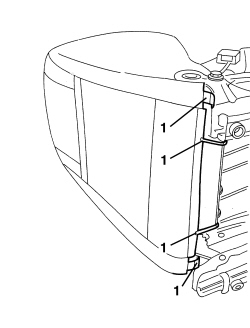
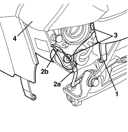

7045A18 FRONT SEAT BACKREST ASSEMBLY (ONE), LEFT OR RIGHT - R.R.
- Path
- Procedures > 70 FITTINGS > 7045 FRONT SEATS > 7045A FRONT SEAT ASSEMBLY > 7045A18 FRONT SEAT BACKREST ASSEMBLY (ONE), LEFT OR RIGHT - R.R.
- Kind
- repair procedure (removal / refitting; the operation number is the code)
- Applies to
- all engines; all production periods
- Interactive page
- https://sloeber94.github.io/elrnDB-aBrrSpdr/en/#/946004134
Applies to: all engines; all production periods
 Removing
Removing
 Refitting
RefittingOp. 7045A10 FRONT SEAT (ONE), LEFT OR RIGHT - R.R.
Op. 7045A56 DRIVER'S SEAT HEIGHT ADJUSTMENT DEVICE CONTROL LEVER - R.R
Op. 7045A33 CONTROL LEVER FOR DEVICE TO ADJUST FRONT SEAT SWINGING - RR
Op. 7045A43 FRONT SEAT EXTERIOR GUARD (ONE), LEFT OR RIGHT - R.R
1. Working on the lower side of the seat, disconnect the retainers (1) for the cushion cover.
2. Disconnect the retainer (2a) and the Air Bag wiring retaining band (2b).

Applies to: all engines; all production periods
1. Remove the connector holder (1a) from the connector (1b), (1c), (1d) involved, working as described later on.
2. If inserted, extract the locking slide.
3. Using a screwdriver, move the fastening levers (3a) sideways, in the direction of the arrows.

Applies to: all engines; all production periods
1. Extract the individul connectors (1a) from the connector holder (1b).

Applies to: all engines; all production periods
1. Disconnect the backrest cover rear retainers.

Applies to: all engines; all production periods
1. Disconnect the inner edge of the cushion cover.
2. Disconnect the outer casing retainer (2a) then the cable retainer (2b) for the memory rod.
3. Loosen the backrest bolts.
4. Keep the backrest complete with Air Bag.

Applies to: all engines; all production periods
Applies to: all engines; all production periods
Refitting
Removing- Check that the backrest complete with Air Bag is not damaged.
- Position the backrest.
- Tighten the backrest fixing bolts.
- Connect the memory rod cable retainer to the backrest, then the outer casing retainer.
- Connect the inner edge of the cushion cover.
- Connect the backrest cover rear retainers.
- Fit the connector in the connector holder and place the lever in the middle.
- Working on the lower side of the seat, connect the retainer and the Air Bag wiring retaining band.
- Connect the cushion cover retainers.
Op. 7045A43 FRONT SEAT EXTERIOR GUARD (ONE), LEFT OR RIGHT - R.R
Op. 7045A33 CONTROL LEVER FOR DEVICE TO ADJUST FRONT SEAT SWINGING - RR
Op. 7045A56 DRIVER'S SEAT HEIGHT ADJUSTMENT DEVICE CONTROL LEVER - R.R
Topics linked from this page (5)
- 5580C44 FRONT SIDE BAG MODULE (ONE) LH OR RH - R.R
- 7045A10 FRONT SEAT (ONE), LEFT OR RIGHT - R.R.
- 7045A33 CONTROL LEVER FOR DEVICE TO ADJUST FRONT SEAT SWINGING - RR
- 7045A43 FRONT SEAT EXTERIOR GUARD (ONE), LEFT OR RIGHT - R.R
- 7045A56 DRIVER'S SEAT HEIGHT ADJUSTMENT DEVICE CONTROL LEVER - R.R